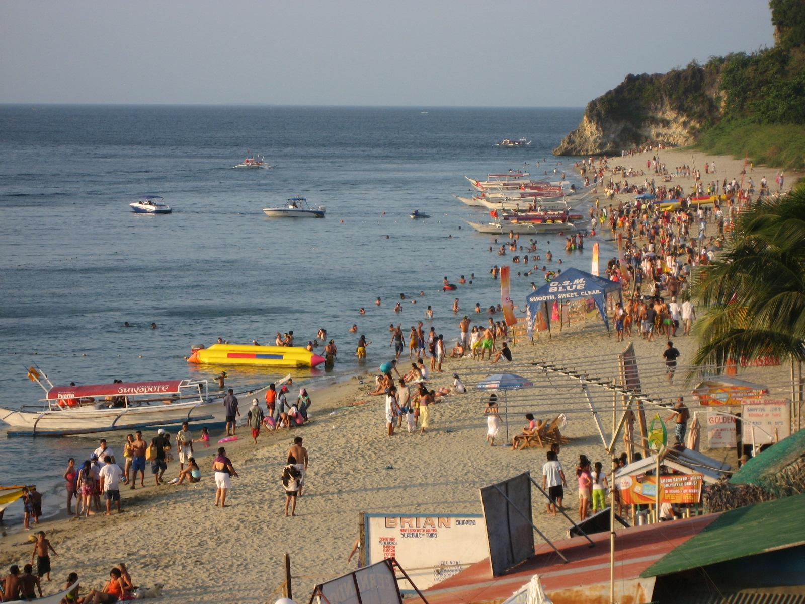
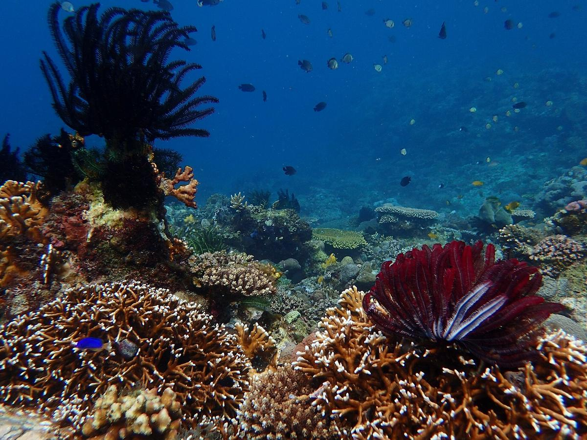

Beach
White Beach
Wide white sand, sunsets, bars and restaurants, and fire dancers in the evening.
See details
DISCOVER PUERTO GALERA
White sand, coral reefs and island boat rides, just a ferry crossing from Batangas. Plan your trip, compare stays and learn how to get there.
FEATURED DESTINATIONS
Three favorites that show off what Puerto Galera is known for: beach life, diving and waterfalls.

Wide white sand, sunsets, bars and restaurants, and fire dancers in the evening.
See details
The center for dive resorts, nightlife and international dining, with reefs close to shore.
See details
A roadside waterfall on the way toward Calapan. An entrance fee applies.
See detailsSCENE ONE
Soft white sand, clear water and sunsets, with fire dancers after dark.

SCENE TWO
Most dive sites are a short boat ride from Sabang.
SCENE THREE
Tamaraw Falls sits along the road toward Calapan.
QUICK FACTS
PLAN YOUR TRIP
Bus to Batangas Pier, ferry to Balatero, then a short ride to White Beach or Sabang. Our travel guide lists the route, fares and what to bring.
Open Travel Guide